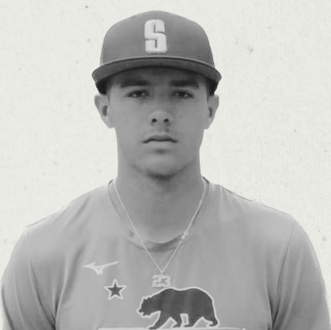

Our Athletes

Name: Amos Aguilera
Sport: Jurupa Hills High School
Story:Amos Aguilera is a 6'1", 170-pound first baseman from Fontana, CA, with a tall, projectable frame and room to add strength. A multi-sport athlete competing in basketball and wrestling, he brings athleticism, coordination, and toughness to the baseball field. Defensively, he has soft hands, solid footwork, and a strong feel for the glove, making him a reliable presence at first base. His short arm action leads to accurate throws, and with further development—particularly by driving through his target—he can add more velocity.
Name: Amos Aguilera
Sport: Jurupa Hills High School
Story:Amos Aguilera is a 6'1", 170-pound first baseman from Fontana, CA, with a tall, projectable frame and room to add strength. A multi-sport athlete competing in basketball and wrestling, he brings athleticism, coordination, and toughness to the baseball field. Defensively, he has soft hands, solid footwork, and a strong feel for the glove, making him a reliable presence at first base. His short arm action leads to accurate throws, and with further development—particularly by driving through his target—he can add more velocity.